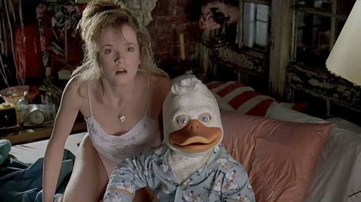

🦆 🎸 HOWARD THE DUCK (1986) — CERTIFIED MGC G-6

🏛 MGC LOWER COURT OF APPEALS
- ASSET TITLE: Howard the Duck (1986) – The Cleveland Laser-Beam Duck-Planet Ledger
- OFFICIAL REGISTRY GRADE: Certified MGC G-6 (Good / Big-Budget 1980s Cult Misfire)
- LOWER COURT JURISDICTION: Judge Morpheus (Lower Court Floor)
- CASE FILE: #118
📜 🕶️ MORPHEUS’S 5X LENS INSPECTION
Morpheus leans back in his chair, pushes his rimless shades up, and sets the 1986 George Lucas-produced cult oddity under the 5x glass.
1. The Tonal Identity Crisis (Script & Genre Whiplash)
- The Defect: The movie never figures out whether it wants to be a cynical adult comic-book satire, a family-friendly sci-fi adventure, or an 80s rock-and-roll romance.
- The Breakdown: One minute Howard is cracking sarcastic jokes about Playduck magazines and working dead-end jobs in Cleveland; the next, he’s dodging demonic Dark Overlords and sharing awkward bedroom scenes with Lea Thompson.
2. The Rubber-Suit Limitations (Lead Character Execution)
- The Defect: Putting a mid-1980s actor inside a rigid animatronic duck suit severely limits facial expressions, mouth sync, and physical comedy.
- The Breakdown: Even with multiple puppeteers operating the bill and eyebrows off-camera, Howard often looks stiff during dialogue-heavy scenes, making his romantic chemistry with Beverly feel bizarre rather than charming.
3. Real 1980s Studio Craftsmanship & Cult Charm (Why It Earns G-6)
- The Breakdown: Beneath the messy script, Howard the Duck still packs genuine big-budget 1980s production muscle—featuring classic ILM stop-motion monsters in the diner climax, an unhinged villain turn from Jeffrey Jones, Lea Thompson going all-in as a rock singer, and a catchy Thomas Dolby soundtrack that keeps the whole mess entertaining from start to finish.
⚖️ MORPHEUS’S BENCH VERDICT
- Morpheus taps the 5x lens once and drops the stamp onto the Cleveland docket. Wild tonal whiplash and a stiff animatronic duck suit keep this 1986 oddity firmly grounded in the G register, while genuine ILM monster effects, Jeffrey Jones’s over-the-top villainy, and pure 80s cult nostalgia lift it cleanly to Certified MGC G-6 Good. Case Closed. 🦆🎸🕶️

• © 2026 MOVIE GRADING CONSENSUS. All Sovereign Rights Reserved.